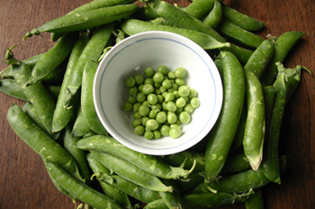

Difficile de dire que les petits pois sont des légumes oubliés. Les supermarchés croulent sous les boites de pois-carottes aussi insipides qu'impossibles à intégrer dans une recette. Vous souvenez-vous par contre de la dernière fois que vous avez écossé une gousse de pois frais?
Car c'est bien là que le bat blesse. Écosser des petits pois demande plus de temps que peler une carotte! Le pois frais est presque l'exemple type du la cuisine slow-food (qui s'oppose aux fast-food): prendre son temps pour disposer d'un produit de qualité.
Prenez donc un peu de temps pour redécouvrir le pois frais, cuit à la vapeur ou à à gros bouillon, tout en veillant à lui garder un léger croquant. C'est là qu'il va vraiment dévoiler son arôme et ses saveurs sucrées. A tel point que le cuisinier n'hésitera pas à en croquer quelques-uns crus en les écossant.
Beaucoup plus énergétiques que les légumes habituels, il ne faut pas oublier que les pois sont des légumineuses. Ainsi, les pois cassés ne sont rien de moins que des "petits pois" séchés... On veillera donc à ne pas avoir la main trop lourde en période de régime. Ils seront par contre un petit allié de taille pour donner une texture amusante et un joli rendu à de nombreux plats.